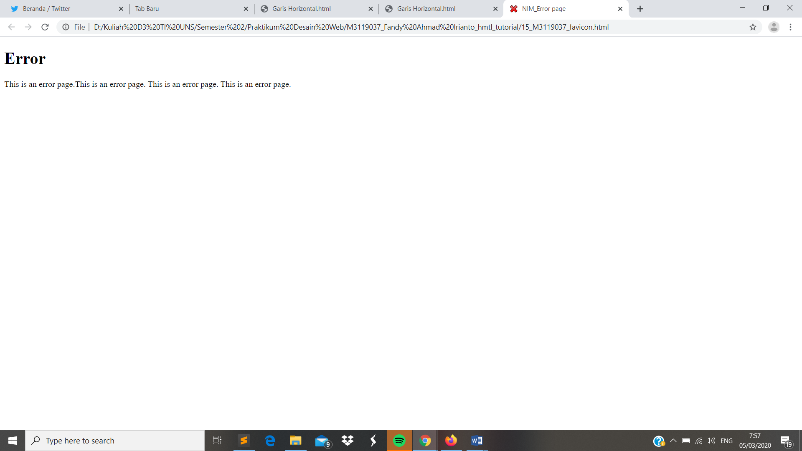

Error Page
// Favicon merupakan icon atau tanda yang digunakan pada address bar suatu laman web.
Codingan
<!DOCTYPE html>
<html>
<head>
<meta charset="UTF-8">
<title> NIM_Error page </title>
<link rel ="icon"href="error.ico"type="image/x-icon"/>
</head>
<body>
<h1> Error </h1>
<p>
This is an error page.This is an error page. This is an error page. This is an error page.
</p>
</body>
</html>
Tampilan Hasil Percobaan

Kesimpulan
Pada percobaan favicon kali ini dapat kita ketahui bahwa favicon digunakan sebagai icon dalam address bar. Untuk membuatnya kita perlu mendownload icon kemudian dijadikan .ico menggunakkan Favicon.ico. Setelah didapaptkan